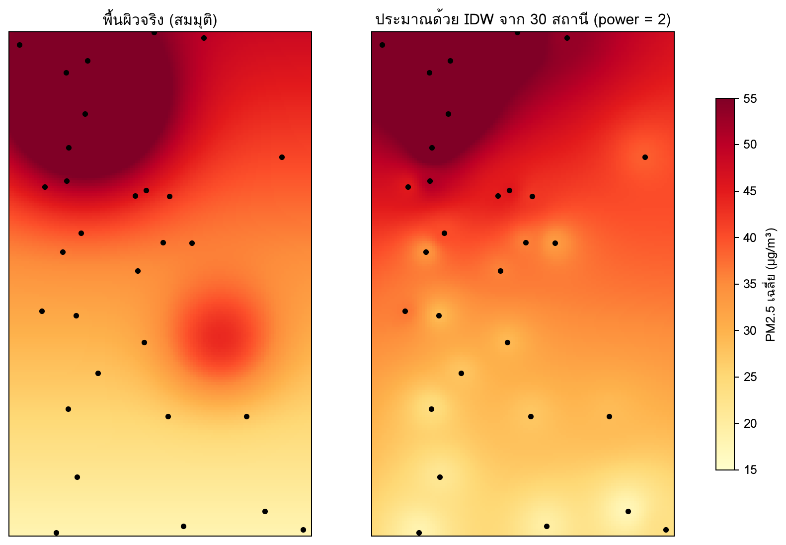

17 ข้อมูลเชิงพื้นที่
PM2.5 เป็นปรากฏการณ์เชิงพื้นที่ ควันจากการเผาเคลื่อนข้ามจังหวัดและข้ามพรมแดน สถานีที่อยู่ใกล้กันมักวัดได้ค่าคล้ายกัน และพื้นที่ส่วนใหญ่ของประเทศไม่มีสถานีวัดอยู่เลย คำถามหลายข้อจึงตอบได้ดีที่สุดเมื่อมองข้อมูลบนแผนที่ เช่น สถานีครอบคลุมพื้นที่ใดบ้าง จังหวัดใดมีวันเกินมาตรฐานมาก กลุ่มของรูปแบบฤดูกาลจากบทที่ 15 กระจุกตามภูมิศาสตร์หรือไม่ และพื้นที่ที่ไม่มีสถานีน่าจะมีฝุ่นระดับใด
แต่ข้อมูลเชิงพื้นที่มีกับดักเฉพาะตัวที่ข้อมูลตารางทั่วไปไม่มี ตัวเลขพิกัดเดียวกันอาจหมายถึงตำแหน่งต่างกันหลายร้อยเมตรถ้าใช้ระบบอ้างอิงต่างกัน ระยะทางที่คำนวณจากองศาไม่มีความหมายเป็นกิโลเมตร แผนที่ที่ระบายสีทั้งจังหวัดด้วยค่าจากสถานีเดียวทำให้ผู้อ่านเชื่อว่าทั้งจังหวัดมีค่าเท่านั้น และข้อสรุปเชิงพื้นที่อาจกลับด้านเมื่อเปลี่ยนวิธีแบ่งเขต บทนี้เริ่มจากพื้นฐานของภูมิมาตรศาสตร์และระบบพิกัด แล้วจึงไปที่การดำเนินการเชิงพื้นที่ แผนที่ choropleth สหสัมพันธ์เชิงพื้นที่ การประมาณค่าระหว่างสถานี และแผนที่บนเว็บ
วัตถุประสงค์การเรียนรู้
เมื่อจบบทนี้ ผู้อ่านสามารถ
- อธิบายความสัมพันธ์ระหว่าง geoid, ellipsoid, datum และพิกัดภูมิศาสตร์ และผลของการใช้ datum ต่างกัน
- เลือกระบบพิกัดอ้างอิงที่เหมาะกับงานในประเทศไทย และแปลงระหว่างระบบได้อย่างถูกต้อง
- สร้างและตรวจข้อมูลแบบ vector ของสถานีและขอบเขตการปกครอง ด้วย GeoPandas
- ใช้การดำเนินการเชิงพื้นที่และ spatial join ทั้งเพื่อวิเคราะห์และเพื่อตรวจคุณภาพข้อมูล
- ออกแบบแผนที่ choropleth ที่ซื่อตรง และอธิบายผลของ MAUP ต่อข้อสรุป
- คำนวณและตีความ Moran’s I และประเมินการประมาณค่าเชิงพื้นที่ด้วย cross-validation
- สร้างแผนที่เชิงโต้ตอบด้วย Folium ที่บอกที่มาและข้อจำกัดของข้อมูล
17.1 ภูมิมาตรศาสตร์เบื้องต้น: ellipsoid, datum, พิกัดภูมิศาสตร์
รูปร่างของโลก
การบอกตำแหน่งบนโลกด้วยตัวเลขสองตัวต้องตอบคำถามก่อนว่าโลกมีรูปร่างอย่างไร คำตอบที่ใช้ในทางปฏิบัติมีสามระดับ (Iliffe และ Lott 2008)
| แบบจำลอง | คืออะไร | ใช้ทำอะไร |
|---|---|---|
| พื้นผิวจริง (topography) | ภูเขา หุบเขา ทะเล | ไม่ใช้เป็นพื้นอ้างอิงเพราะซับซ้อนเกินไป |
| geoid | พื้นผิวสมศักย์ของแรงโน้มถ่วงที่ใกล้ระดับน้ำทะเลปานกลาง | อ้างอิงความสูง |
| ellipsoid | ทรงรีที่ได้จากการหมุนวงรีรอบแกนสั้น นิยามด้วยรัศมีที่เส้นศูนย์สูตร \(a\) และความแบน \(f\) | อ้างอิงละติจูดและลองจิจูด |
ellipsoid ที่ใช้กับ GPS ทั่วโลกคือ WGS 84 ซึ่งมี \(a = 6{,}378{,}137\) เมตร และ \(f = 1/298.257223563\) (National Geospatial-Intelligence Agency 2014) โลกจึงแบนที่ขั้วเพียงเล็กน้อย รัศมีที่ขั้วสั้นกว่าที่เส้นศูนย์สูตรประมาณ 21 กิโลเมตร
datum
datum คือการผูก ellipsoid เข้ากับโลกจริง ว่าศูนย์กลางของ ellipsoid อยู่ที่ใด และแกนหันไปทางใด datum ระดับท้องถิ่นในอดีตเลือกให้ ellipsoid แนบกับพื้นผิวของภูมิภาคหนึ่งได้ดีที่สุด ส่วน datum ระดับโลกอย่าง WGS 84 ใช้ศูนย์กลางมวลของโลก
ประเด็นที่สำคัญต่องานของเราคือ พิกัดตัวเลขเดียวกันบนสอง datum หมายถึงตำแหน่งต่างกัน แผนที่และข้อมูลเก่าของประเทศไทยจำนวนมากใช้ datum Indian 1975 ขณะที่ GPS และบริการแผนที่บนเว็บใช้ WGS 84 ข้อมูลที่ใช้ datum ต่างกันอาจเลื่อนกันได้ในระดับหลายร้อยเมตร ซึ่งมากพอที่จะทำให้สถานีที่อยู่ใกล้เขตแดนตกไปอยู่อีกอำเภอหรืออีกจังหวัด เมื่อได้ข้อมูลเชิงพื้นที่จากแหล่งใด ต้องตรวจว่าใช้ datum อะไรเสมอ
พิกัดภูมิศาสตร์
ละติจูด (\(\varphi\)) คือมุมระหว่างเส้นตั้งฉากกับ ellipsoid ณ จุดนั้นกับระนาบเส้นศูนย์สูตร ลองจิจูด (\(\lambda\)) คือมุมระหว่างระนาบของเส้นเมริเดียนที่ผ่านจุดนั้นกับเส้นเมริเดียนแรกที่กรีนิช ประเทศไทยอยู่ที่ละติจูดประมาณ 5.6° ถึง 20.5° เหนือ และลองจิจูดประมาณ 97.3° ถึง 105.7° ตะวันออก ช่วงนี้มีประโยชน์มากสำหรับตรวจข้อมูล ถ้าพิกัดของสถานีไทยมีละติจูดเกิน 90 หรือมีค่าใกล้ 100 แปลว่าสลับละติจูดกับลองจิจูด
ความยาวของหนึ่งองศาไม่คงที่
หนึ่งองศาละติจูดยาวประมาณ 111 กิโลเมตรทุกที่ แต่หนึ่งองศาลองจิจูดสั้นลงเมื่อห่างจากเส้นศูนย์สูตร ตามความกว้างของวงละติจูด
\[ L_\lambda(\varphi) \approx 111.32 \cos\varphi \ \text{กิโลเมตรต่อองศา} \tag{17.1}\]
โดย \(L_\lambda\) คือความยาวของหนึ่งองศาลองจิจูด และ \(\varphi\) คือละติจูด (สูตรนี้ประมาณโลกเป็นทรงกลม) ที่ละติจูด 6° ทางใต้ของประเทศ หนึ่งองศาลองจิจูดยาวประมาณ 110.7 กิโลเมตร ที่ละติจูด 20° ทางเหนือยาวประมาณ 104.6 กิโลเมตร ความต่างนี้ทำให้ “ระยะ 0.5 องศา” ไม่มีความหมายเป็นกิโลเมตร และวงกลมรัศมี 0.5 องศาบนพิกัดภูมิศาสตร์ไม่ใช่วงกลมบนพื้นโลก
ระยะทางบนผิวโลก
ระยะทางที่สั้นที่สุดระหว่างสองจุดบนทรงกลมคำนวณได้ด้วยสูตร haversine
\[ d = 2R \arcsin\sqrt{\sin^2\!\frac{\Delta\varphi}{2} + \cos\varphi_1\cos\varphi_2\sin^2\!\frac{\Delta\lambda}{2}} \tag{17.2}\]
โดย \(R\) คือรัศมีเฉลี่ยของโลก (ประมาณ 6,371 กิโลเมตร) \(\varphi_1\), \(\varphi_2\) คือละติจูดของสองจุด และ \(\Delta\varphi\), \(\Delta\lambda\) คือผลต่างของละติจูดและลองจิจูด (หน่วยเรเดียน) ตัวอย่าง ระยะระหว่างจุดในกรุงเทพมหานคร (13.756° N, 100.502° E) กับจุดในตัวเมืองเชียงใหม่ (18.788° N, 98.985° E) ประมาณ 582 กิโลเมตร สูตรนี้คลาดเคลื่อนจากระยะบน ellipsoid ไม่เกินราว 0.5% ซึ่งเพียงพอสำหรับงานสำรวจ ถ้าต้องการความแม่นยำสูงกว่า ใช้ pyproj.Geod(ellps="WGS84").inv() ซึ่งคำนวณบน ellipsoid
import numpy as np
import pandas as pd
def haversine_km(lat1, lon1, lat2, lon2, r=6371.0088):
p1, p2 = np.radians(lat1), np.radians(lat2)
dphi, dlam = p2 - p1, np.radians(lon2 - lon1)
h = np.sin(dphi / 2) ** 2 + np.cos(p1) * np.cos(p2) * np.sin(dlam / 2) ** 2
return 2 * r * np.arcsin(np.sqrt(h))
haversine_km(13.7563, 100.5018, 18.7883, 98.9853)# ผลลัพธ์ (ตัวอย่าง)
582.4...17.2 ระบบพิกัดและเส้นโครงแผนที่สำหรับประเทศไทย (WGS 84, UTM 47N/48N)
ระบบพิกัดอ้างอิง
ระบบพิกัดอ้างอิง (coordinate reference system, CRS) คือข้อกำหนดที่บอกว่าตัวเลขพิกัดหมายถึงตำแหน่งใดบนโลก ประกอบด้วย datum ระบบพิกัด (ภูมิศาสตร์หรือฉาย) และหน่วย CRS ที่ใช้บ่อยมีรหัสมาตรฐานจากฐานข้อมูล EPSG (International Association of Oil & Gas Producers, ม.ป.ป.) ซึ่งทำให้อ้างอิงได้ด้วยตัวเลขเดียว
CRS แบ่งเป็นสองแบบใหญ่ แบบภูมิศาสตร์ (geographic) ใช้ละติจูดและลองจิจูดเป็นองศา แบบฉาย (projected) ใช้ เส้นโครงแผนที่ (map projection) แปลงพื้นผิวโค้งเป็นระนาบที่มีหน่วยเป็นเมตร การฉายทุกแบบต้องบิดเบือนบางอย่าง ไม่ว่าจะเป็นพื้นที่ รูปร่าง ระยะทาง หรือทิศทาง เพราะพื้นผิวโค้งแผ่เป็นระนาบโดยไม่บิดเบือนไม่ได้ (Snyder 1987) การเลือกเส้นโครงจึงเป็นการเลือกว่าจะรักษาอะไรไว้
CRS ที่ใช้กับประเทศไทย
| CRS | EPSG | หน่วย | ใช้เมื่อ |
|---|---|---|---|
| WGS 84 | 4326 | องศา | เก็บข้อมูล GPS GeoJSON แสดงผลบนแผนที่เว็บ |
| WGS 84 / UTM zone 47N | 32647 | เมตร | คำนวณระยะทาง พื้นที่ และ buffer ในพื้นที่ส่วนใหญ่ของประเทศ (ลองจิจูด 96°–102° E) |
| WGS 84 / UTM zone 48N | 32648 | เมตร | พื้นที่ทางตะวันออกของ 102° E เช่น อุบลราชธานี มุกดาหาร นครพนม |
| Indian 1975 / UTM zone 47N, 48N | 24047, 24048 | เมตร | ข้อมูลเก่าที่ยังใช้ datum Indian 1975 |
| WGS 84 / Pseudo-Mercator | 3857 | เมตร (ไม่ใช่ระยะจริง) | การแสดงผลของแผนที่เว็บ ห้ามใช้วัดระยะหรือพื้นที่ |
UTM (Universal Transverse Mercator) แบ่งโลกเป็น 60 โซนตามลองจิจูด โซนละ 6 องศา แต่ละโซนใช้เส้นโครง Transverse Mercator ที่มีเมริเดียนกลางของตัวเอง โซน 47 มีเมริเดียนกลางที่ 99° E และโซน 48 ที่ 105° E ภายในโซน ความคลาดเคลื่อนของมาตราส่วนน้อยมาก (ไม่เกินราว 0.1%) จึงเหมาะกับการคำนวณระยะทางและพื้นที่ ประเทศไทยคร่อมสองโซน ถ้าวิเคราะห์ทั้งประเทศด้วยโซนเดียว เช่น 32647 พื้นที่ทางตะวันออกสุดจะอยู่นอกโซนไปราว 3–4 องศา ความคลาดเคลื่อนเพิ่มขึ้นแต่ยังพอใช้กับงานสำรวจระดับประเทศ ถ้าต้องการความแม่นยำสูงในพื้นที่ทางตะวันออก ให้ใช้ 32648 แยก
Web Mercator (EPSG:3857) ที่บริการแผนที่บนเว็บใช้ ขยายพื้นที่มากขึ้นเรื่อย ๆ เมื่อห่างจากเส้นศูนย์สูตร ที่ละติจูดของประเทศไทยการขยายยังไม่มาก แต่ตัวเลขเมตรของ EPSG:3857 ไม่ใช่เมตรจริงบนพื้นโลก จึงห้ามใช้คำนวณระยะทางหรือพื้นที่
หลักการทำงานกับ CRS
กฎที่ใช้ตลอดบทนี้คือ เก็บและแสดงผลใน EPSG:4326 แต่คำนวณใน CRS ที่มีหน่วยเป็นเมตร
import geopandas as gpd
print(gdf.crs) # ตรวจ CRS ทุกครั้งก่อนทำอะไร
gdf_m = gdf.to_crs(epsg=32647) # แปลงพิกัด (reproject) เป็นเมตร
gdf_m["buffer_10km"] = gdf_m.buffer(10_000)GeoPandas มีสองเมธอดที่ชื่อคล้ายกันแต่ทำงานต่างกันโดยสิ้นเชิง to_crs แปลงพิกัดจริง ตัวเลขทุกตัวเปลี่ยน ส่วน set_crs ประกาศ ว่าข้อมูลอยู่ใน CRS ใดโดยไม่เปลี่ยนตัวเลข ใช้ set_crs เฉพาะเมื่อข้อมูลไม่มี CRS ติดมาและเรารู้แน่ว่าเป็น CRS ใด การใช้ set_crs ผิดคือการบอกว่าตัวเลขที่เป็นเมตรเป็นองศา ซึ่งทำให้จุดไปอยู่คนละซีกโลก
การตัดสินใจเรื่อง CRS ควรเขียนไว้ใน src/geo_utils.py เป็นค่าคงที่ เพื่อให้ notebook รายงาน และแดชบอร์ดใช้ค่าเดียวกัน
# src/geo_utils.py
CRS_STORE = "EPSG:4326" # เก็บ แสดงผล และ GeoJSON
CRS_METRIC = "EPSG:32647" # คำนวณระยะทางและพื้นที่ทั้งประเทศ17.3 vector data model: point, line, polygon
แบบจำลองข้อมูลเชิงพื้นที่สองแบบ
ข้อมูลเชิงพื้นที่มีสองแบบจำลองหลัก vector แทนวัตถุด้วยเรขาคณิตที่มีพิกัดชัดเจน เช่น จุดของสถานี เส้นของถนน และรูปหลายเหลี่ยมของจังหวัด raster แทนพื้นที่ด้วยกริดของเซลล์ที่แต่ละเซลล์มีค่า เช่น ภาพถ่ายดาวเทียมหรือผลการประมาณค่าเชิงพื้นที่ (หัวข้อ 17.7) บทนี้ใช้ vector เป็นหลัก
แบบจำลอง vector ที่ใช้กันทั่วไปเป็นไปตามมาตรฐาน Simple Features ของ Open Geospatial Consortium (Open Geospatial Consortium 2011) ซึ่งนิยามชนิดของเรขาคณิตไว้ดังนี้
| ชนิด | ประกอบด้วย | ตัวอย่างในโครงการ |
|---|---|---|
| Point | หนึ่งพิกัด | สถานีตรวจวัด |
| LineString | ลำดับของพิกัด | ถนนสายหลักใกล้สถานี เส้นทางของมวลอากาศ |
| Polygon | วงรอบนอกและวงรูด้านใน (ถ้ามี) | ขอบเขตจังหวัด พื้นที่ป่า |
| MultiPoint, MultiLineString, MultiPolygon | กลุ่มของชนิดเดียวกัน | จังหวัดที่มีเกาะ เช่น ภูเก็ต กระบี่ |
GeoDataFrame
GeoPandas (Jordahl และคณะ 2020) ขยาย pandas ด้วย GeoDataFrame ซึ่งเป็น DataFrame ที่มีคอลัมน์ geometry และมี CRS กำกับ การดำเนินการเชิงเรขาคณิตอาศัยไลบรารี Shapely และการแปลงพิกัดอาศัย pyproj
import duckdb
import geopandas as gpd
con = duckdb.connect("data/pm25.duckdb", read_only=True)
st = con.execute("SELECT * FROM stations WHERE lat IS NOT NULL AND lon IS NOT NULL").df()
stations = gpd.GeoDataFrame(st, geometry=gpd.points_from_xy(st["lon"], st["lat"]),
crs="EPSG:4326")
print(stations.total_bounds) # [min_lon, min_lat, max_lon, max_lat]points_from_xy รับ x ก่อน y ซึ่งคือ ลองจิจูดก่อนละติจูด ลำดับนี้ตรงข้ามกับที่คนพูดกันทั่วไป (“ละติจูด ลองจิจูด”) และเป็นต้นเหตุของข้อผิดพลาดที่พบบ่อยที่สุดในงานเชิงพื้นที่ total_bounds ของสถานีในประเทศไทยควรอยู่ในช่วงประมาณ [97, 5, 106, 21] ถ้าได้ [5, 97, 21, 106] แปลว่าสลับ
ตรวจคุณภาพของพิกัด
lon_ok = st["lon"].between(97.0, 106.0)
lat_ok = st["lat"].between(5.0, 21.0)
suspect = st.loc[~(lon_ok & lat_ok), ["station_id", "name_th", "lat", "lon"]]
dup = st[st.duplicated(["lat", "lon"], keep=False)]นอกจากพิกัดที่อยู่นอกประเทศและพิกัดที่สลับกัน ปัญหาที่ควรตรวจคือ สถานีต่างกันที่มีพิกัดเดียวกันพอดี (อาจคัดลอกผิด) และพิกัดที่มีทศนิยมน้อยมาก เช่น สองตำแหน่ง ซึ่งมีความละเอียดเพียงราว 1 กิโลเมตร (ทศนิยมตำแหน่งที่สองของละติจูดคือ 0.01° ≈ 1.1 กิโลเมตร)
รูปแบบไฟล์
| รูปแบบ | จุดเด่น | ข้อจำกัด |
|---|---|---|
| GeoJSON | ข้อความ อ่านง่าย ใช้กับเว็บได้ตรง | ไฟล์ใหญ่ มาตรฐาน RFC 7946 กำหนดให้ใช้ WGS 84 ลำดับลองจิจูดก่อนละติจูด (Butler และคณะ 2016) |
| Shapefile | ใช้มานานมาก ทุกโปรแกรมอ่านได้ | หลายไฟล์ต่อหนึ่งชุด ชื่อคอลัมน์ยาวได้ไม่เกิน 10 ตัวอักษร เรื่อง encoding ภาษาไทยมักมีปัญหา |
| GeoPackage | ไฟล์เดียว เก็บได้หลายชั้น มีดัชนีเชิงพื้นที่ | ไฟล์ binary |
| GeoParquet | columnar บีบอัดดี อ่านเร็วมาก ใช้กับ DuckDB ได้ | เครื่องมือรุ่นเก่ายังไม่รองรับทั้งหมด |
สำหรับโครงการนี้ ขอบเขตจังหวัดเก็บเป็น GeoJSON ที่ data/geo/thailand_provinces.geojson ตามเอกสารสัปดาห์ที่ 13 ผลลัพธ์ที่สร้างเองและใช้ซ้ำบ่อยควรบันทึกเป็น GeoParquet ด้วย gdf.to_parquet()
ขอบเขตการปกครอง
ไฟล์ขอบเขตจังหวัดหาได้จากหลายแหล่ง เช่น geoBoundaries (Runfola และคณะ 2020) Humanitarian Data Exchange ของ OCHA และ GADM แต่ละแหล่งมีสัญญาอนุญาตต่างกัน บางแหล่งห้ามใช้เชิงพาณิชย์หรือต้องระบุที่มาในรูปแบบเฉพาะ ต้องอ่านและบันทึกสัญญาอนุญาต แหล่งที่มา และวันที่ดาวน์โหลดไว้ใน README ของโครงการเสมอ (บทที่ 22) และเพราะโฟลเดอร์ data/ ไม่ถูก commit ต้องเขียนวิธีได้ไฟล์มาไว้ด้วย
prov = gpd.read_file("data/geo/thailand_provinces.geojson")
print(prov.crs, len(prov)) # จำนวนจังหวัดขึ้นกับแหล่งข้อมูลและปีของข้อมูล
print(prov.columns.tolist()) # ตรวจชื่อคอลัมน์จริง ห้ามเดา
print(prov.is_valid.all()) # polygon ที่ผิดรูปทำให้การดำเนินการเชิงพื้นที่ผิดpolygon ที่ไม่ถูกต้อง (invalid) เช่น เส้นขอบตัดกันเอง ทำให้ spatial join และการคำนวณพื้นที่ให้ผลผิดหรือ error ถ้าพบ ให้แก้ด้วย prov.geometry.make_valid() แล้วตรวจผลด้วยตา ขอบเขตการปกครองยังเปลี่ยนตามเวลาด้วย จังหวัดหรืออำเภอใหม่ที่ตั้งขึ้นทำให้ไฟล์ต่างปีมีจำนวนพื้นที่ไม่เท่ากัน
17.4 spatial operation และ spatial join
การดำเนินการเชิงพื้นที่พื้นฐาน
| การดำเนินการ | คำถามที่ตอบ | GeoPandas | ต้องใช้ CRS เมตร |
|---|---|---|---|
| ระยะทาง | สองสถานีห่างกันเท่าใด | gs.distance(other) |
ใช่ |
| buffer | พื้นที่ภายในรัศมี 10 กม. รอบสถานีคือบริเวณใด | gs.buffer(10_000) |
ใช่ |
| พื้นที่ | จังหวัดมีพื้นที่กี่ตารางกิโลเมตร | gs.area / 1e6 |
ใช่ |
| centroid | จุดศูนย์กลางของจังหวัดอยู่ที่ใด | gs.centroid |
ควรใช้ |
| ความสัมพันธ์ | จุดอยู่ใน polygon หรือไม่ polygon สองรูปตัดกันหรือไม่ | within, contains, intersects |
ไม่จำเป็น |
| รวมพื้นที่ | รวมจังหวัดเป็นภาค | gdf.dissolve(by="region") |
ไม่จำเป็น |
ถ้าคำนวณระยะทาง buffer หรือพื้นที่ใน EPSG:4326 GeoPandas จะเตือนว่า “Geometry is in a geographic CRS” ผลที่ได้มีหน่วยเป็นองศาซึ่งไม่มีความหมาย คำเตือนนี้ต้องแก้ ไม่ใช่ปิด
spatial join
spatial join (spatial join) เชื่อมสองตารางด้วยความสัมพันธ์เชิงพื้นที่แทน key เช่น “สถานีนี้อยู่ในจังหวัดใด” ฟังก์ชันหลักคือ gpd.sjoin
prov = prov.rename(columns={"ADM1_TH": "prov_name"}) # ชื่อคอลัมน์จริงขึ้นกับไฟล์
prov = prov.to_crs(stations.crs) # CRS ต้องตรงกันก่อน join
joined = gpd.sjoin(stations, prov[["prov_name", "geometry"]], how="left", predicate="within")ชื่อคอลัมน์ ADM1_TH เป็นเพียงตัวอย่าง ไฟล์แต่ละแหล่งตั้งชื่อต่างกัน ต้องดูจาก prov.columns จริง
predicate กำหนดความสัมพันธ์ที่ใช้ within สำหรับจุดใน polygon และ intersects สำหรับเรขาคณิตที่สัมผัสหรือซ้อนกัน จุดที่อยู่บนเส้นขอบพอดีจะไม่ within polygon ใดเลย ซึ่งเกิดได้จริงเมื่อพิกัดมีทศนิยมน้อย ถ้าพบ ให้ใช้ intersects แล้วจัดการแถวซ้ำที่เกิดขึ้น
spatial join เป็นเครื่องมือตรวจคุณภาพ
นอกจากเพิ่มข้อมูล spatial join ยังเป็นเครื่องมือตรวจคุณภาพที่ทรงพลัง เทียบคอลัมน์ province ที่มาจาก Air4Thai กับ prov_name ที่ได้จากพิกัด
check = joined[["station_id", "name_th", "province", "prov_name"]].copy()
check["match"] = check["province"] == check["prov_name"]
print("ไม่อยู่ใน polygon ใด:", int(check["prov_name"].isna().sum()))
check[~check["match"] & check["prov_name"].notna()]| อาการ | สาเหตุที่เป็นไปได้ | วิธีตรวจ |
|---|---|---|
| ชื่อต่างแต่เป็นจังหวัดเดียวกัน | สะกดต่างกัน เช่น “กรุงเทพฯ” กับ “กรุงเทพมหานคร” | สร้างตาราง mapping ใน src/geo_utils.py |
| ต่างจังหวัดจริงและอยู่ใกล้เขตแดน | พิกัดคลาดเคลื่อนเล็กน้อย datum ต่างกัน หรือขอบเขตในไฟล์หยาบ | ดูบนแผนที่ระยะห่างจากเขตแดน |
| ต่างจังหวัดและอยู่ไกลเขตแดน | พิกัดผิด หรือคอลัมน์จังหวัดผิด | เทียบกับเว็บไซต์ Air4Thai และบันทึก |
| ไม่อยู่ใน polygon ใดเลย | พิกัดอยู่ในทะเล สลับละติจูดกับลองจิจูด หรือ CRS ไม่ตรงกัน | ตรวจ total_bounds และ CRS |
เพื่อนบ้านที่ใกล้ที่สุด
sjoin_nearest จับคู่แต่ละแถวกับแถวที่ใกล้ที่สุดของอีกตาราง ใช้หาสถานีเพื่อนบ้านสำหรับตรวจค่าผิดปกติในบทที่ 15 ได้
s_m = stations.to_crs(epsg=32647)[["station_id", "name_th", "geometry"]]
near = gpd.sjoin_nearest(
s_m, s_m.rename(columns={"station_id": "nb_id", "name_th": "nb_name"}),
distance_col="dist_m", exclusive=True,
)
near["dist_km"] = (near["dist_m"] / 1000).round(1)
near.sort_values("dist_km", ascending=False).head()exclusive=True ป้องกันการจับคู่กับตัวเอง (GeoPandas 1.x) สถานีที่ห่างจากเพื่อนบ้านมากที่สุดคือสถานีที่ “แทน” พื้นที่กว้างที่สุด ค่าของสถานีเหล่านี้มีอิทธิพลมากในแผนที่ choropleth และการประมาณค่าเชิงพื้นที่ จึงต้องระวังเป็นพิเศษเมื่อตีความ
พื้นที่ที่แต่ละสถานีเป็นตัวแทน
คำถามว่า “แต่ละสถานีเป็นตัวแทนของพื้นที่ใด” ตอบได้ด้วย Voronoi polygon (หรือ Thiessen polygon) ซึ่งแบ่งระนาบให้ทุกจุดในแต่ละ polygon ใกล้สถานีของ polygon นั้นมากกว่าสถานีอื่น
from shapely import voronoi_polygons
pts = stations.to_crs(epsg=32647)
cells = gpd.GeoDataFrame(geometry=list(voronoi_polygons(pts.union_all()).geoms), crs=pts.crs)
land = prov.to_crs(epsg=32647).union_all()
cells["geometry"] = cells.intersection(land) # ตัดส่วนที่อยู่นอกประเทศ
cells = gpd.sjoin(cells, pts[["station_id", "geometry"]], predicate="contains")
cells["area_km2"] = cells.area / 1e6voronoi_polygons อยู่ใน Shapely 2.0 ขึ้นไป union_all อยู่ใน GeoPandas 1.0 ขึ้นไป (รุ่นก่อนใช้ unary_union) พื้นที่ของ Voronoi polygon บอกได้ทันทีว่าสถานีใดเป็นตัวแทนของพื้นที่หลายหมื่นตารางกิโลเมตร ซึ่งเป็นข้อมูลที่ควรรายงานคู่กับทุกแผนที่ที่ใช้ค่าของสถานีแทนพื้นที่ ข้อจำกัดคือ Voronoi สมมติว่าระยะทางเป็นสิ่งเดียวที่กำหนดความคล้าย ซึ่งไม่จริงเมื่อมีภูเขาหรือทิศทางลมเป็นตัวแบ่ง
17.5 แผนที่ choropleth และปัญหา MAUP
choropleth คืออะไร
แผนที่ choropleth (choropleth map) ระบายสีพื้นที่ตามค่าสถิติของพื้นที่นั้น เป็นแผนที่ที่ใช้บ่อยที่สุดในการสื่อสารข้อมูลระดับจังหวัด และเป็นแผนที่ที่ชวนให้เข้าใจผิดได้ง่ายที่สุดด้วย (Monmonier 2018)
เตรียมข้อมูลอย่างถูกวิธี
ข้อผิดพลาดที่เกิดก่อนวาดคือการรวมข้อมูลผิดระดับ ถ้าเฉลี่ยค่ารายวันทุกสถานีในจังหวัดรวมกัน สถานีที่มีข้อมูลมากจะมีน้ำหนักมาก วิธีที่ชัดเจนกว่าคือ สรุปรายสถานีก่อน แล้วจึงสรุปรายจังหวัด และเก็บจำนวนสถานีไว้ด้วย
agg = con.execute("""
WITH per_station AS (
SELECT station_id,
avg(pm25_mean) AS pm25,
avg(CAST(pm25_mean > 37.5 AS DOUBLE)) AS share_over
FROM daily_pm25_clean
WHERE is_complete AND date < DATE '2024-01-01' -- ช่วงสำรวจ (บทที่ 4)
GROUP BY station_id
)
SELECT s.province, count(*) AS n_stations,
avg(p.pm25) AS pm25_mean, avg(p.share_over) AS share_over_std
FROM per_station AS p JOIN stations AS s USING (station_id)
GROUP BY s.province
""").df()
m = prov.merge(agg, left_on="prov_name", right_on="province", how="left")
print("จังหวัดที่ไม่มีสถานี:", int(m["n_stations"].isna().sum()))how="left" รักษาทุกจังหวัดไว้ จังหวัดที่ไม่มีสถานีจะมีค่าว่าง ซึ่งต้องแสดงเป็นสีที่บอกว่า “ไม่มีข้อมูล” ห้ามเติมเป็นศูนย์ เพราะจะดูเหมือนอากาศดีที่สุด
วาดแบบภาพนิ่งและแบบโต้ตอบ
ax = m.plot(column="share_over_std", cmap="YlOrRd", legend=True, figsize=(6, 9),
scheme="quantiles", k=5,
missing_kwds={"color": "lightgrey", "label": "ไม่มีสถานี"})
ax.set_axis_off()import plotly.express as px
mm = m.dropna(subset=["n_stations"]).reset_index(drop=True)
fig = px.choropleth(mm, geojson=mm.geometry.__geo_interface__, locations=mm.index,
color="share_over_std", color_continuous_scale="YlOrRd",
hover_name="prov_name",
hover_data={"n_stations": True, "pm25_mean": ":.1f", "share_over_std": ":.0%"},
labels={"share_over_std": "สัดส่วนวันเกิน 37.5", "n_stations": "จำนวนสถานี"})
fig.update_geos(fitbounds="locations", visible=False)scheme="quantiles" แบ่งค่าเป็นห้าช่วงที่มีจำนวนจังหวัดเท่ากัน ต้องติดตั้งแพ็กเกจ mapclassify ซึ่ง GeoPandas ใช้สำหรับพารามิเตอร์นี้ การใส่จำนวนสถานีไว้ใน hover ทำให้ผู้อ่านรู้ทันทีว่าสีของจังหวัดนั้นมาจากสถานีกี่แห่ง
การแบ่งช่วงสี
การแบ่งค่าต่อเนื่องเป็นช่วงสีเปลี่ยนภาพได้มาก
| วิธี | หลักการ | เหมาะกับ | ความเสี่ยง |
|---|---|---|---|
| ช่วงเท่ากัน (equal interval) | แต่ละช่วงกว้างเท่ากัน | ค่าที่กระจายสม่ำเสมอ | ข้อมูลเบ้ทำให้แทบทุกพื้นที่อยู่ช่วงเดียว |
| ควอนไทล์ | แต่ละช่วงมีจำนวนพื้นที่เท่ากัน | เทียบลำดับ | พื้นที่ที่ค่าใกล้กันมากอาจได้สีต่างกัน |
| natural breaks (Jenks) | ตัดที่ช่องว่างของข้อมูล | ข้อมูลที่มีกลุ่ม | ช่วงเปลี่ยนเมื่อข้อมูลเปลี่ยน เทียบข้ามปียาก |
| เกณฑ์ที่มีความหมาย | ตัดที่ค่าเชิงนโยบาย เช่น 15 และ 37.5 µg/m³ | สื่อสารกับสาธารณะ | ต้องมีเหตุผลเชิงโดเมนรองรับ |
สำหรับข้อมูล PM2.5 การตัดที่เกณฑ์ที่มีความหมาย เช่น แนวทางของ WHO 15 µg/m³ และมาตรฐานไทย 37.5 µg/m³ สื่อสารได้ดีที่สุด เพราะสีบอกตรง ๆ ว่าพื้นที่อยู่ฝั่งใดของเกณฑ์ และเทียบข้ามปีได้
ข้อควรระวังของ choropleth
| ข้อควรระวัง | ปัญหา | วิธีลด |
|---|---|---|
| จังหวัดที่มีสถานีน้อย | จังหวัดใหญ่ที่มีสถานีเดียวในตัวเมืองถูกระบายสีทั้งจังหวัดตามสถานีนั้น | แสดงจำนวนสถานี ใช้แผนที่จุดคู่กัน หรือแสดงพื้นที่ Voronoi |
| จังหวัดไม่มีข้อมูล | ถ้าเติม 0 จะดูเหมือนอากาศดี | ใช้สีเทาและป้าย “ไม่มีสถานี” |
| ขนาดพื้นที่หลอกตา | จังหวัดที่มีพื้นที่ใหญ่ดึงสายตามากกว่ากรุงเทพมหานครที่มีสถานีหนาแน่นและประชากรมาก | ใช้คู่กับกราฟแท่ง แผนที่จุด หรือ cartogram |
| ค่านับดิบ | จังหวัดใหญ่มีจำนวนวันเกินมาตรฐานรวมมากเพราะมีหลายสถานี | ใช้อัตราหรือสัดส่วน ไม่ใช่ค่านับรวม |
| ค่าเฉลี่ยของค่าเฉลี่ย | วิธีรวมต่างกันให้ค่าต่างกัน | ระบุวิธีรวมในคำบรรยายภาพ |
MAUP
Modifiable Areal Unit Problem (MAUP) (Openshaw 1984) คือปรากฏการณ์ที่ผลการวิเคราะห์ข้อมูลเชิงพื้นที่ขึ้นกับหน่วยพื้นที่ที่เลือกใช้รวมข้อมูล ประกอบด้วยสองผล
- ผลของมาตราส่วน (scale effect) ผลเปลี่ยนเมื่อเปลี่ยนระดับของการรวม เช่น สถานี อำเภอ จังหวัด ภาค ยิ่งรวมหยาบ ความแปรผันยิ่งถูกเฉลี่ยกลบ และสหสัมพันธ์ระหว่างตัวแปรมักสูงขึ้น
- ผลของการแบ่งเขต (zoning effect) ผลเปลี่ยนเมื่อเปลี่ยนวิธีแบ่งเขตที่ระดับเดียวกัน เช่น แบ่งตามจังหวัดหรือแบ่งเป็นกริด 50 กิโลเมตร
ตัวอย่างเชิงแนวคิดกับข้อมูลของเรา ในระดับภาค ภาคหนึ่งอาจดูมีอากาศดีกว่าภาคอื่นเพราะค่าเฉลี่ยของภาคถูกดึงลงด้วยสถานีจำนวนมากในพื้นที่ที่ฝุ่นน้อย แต่ในระดับสถานี ภาคเดียวกันอาจมีจุดที่ฝุ่นหนักที่สุดในประเทศ ข้อสรุปว่า “ภาคนี้อากาศดี” จึงถูกต้องในระดับภาคแต่ไม่ได้บอกอะไรเกี่ยวกับคนที่อาศัยใกล้จุดร้อน ซึ่งเชื่อมกับ ecological fallacy ในบทที่ 13
MAUP แก้ให้หมดไปไม่ได้ แต่ลดผลได้ด้วยการ วิเคราะห์อย่างน้อยสองระดับ แล้วรายงานว่าข้อสรุปคงอยู่หรือเปลี่ยน ใช้หน่วยที่มีความหมายต่อคำถาม (เช่น ระดับจังหวัดเมื่อนโยบายตัดสินใจระดับจังหวัด) และเขียนผลของ MAUP ไว้ในข้อจำกัด
ภาพที่ 17.1 แสดงผลของการแบ่งเขตด้วยข้อมูลสังเคราะห์ จุดตรวจวัดชุดเดียวกันรวมเป็นหกเขตด้วยการแบ่งสองแบบ แบบ 2 × 3 เห็นการไล่ระดับสามขั้นจากบนลงล่าง ส่วนแบบ 3 × 2 เหลือเพียงสองขั้น และค่าสูงสุดของเขตลดจาก 61.3 เหลือ 57.5 µg/m³ ทั้งที่ข้อมูลไม่เปลี่ยนเลย

by_region = agg.merge(con.execute("SELECT DISTINCT province, region FROM stations").df(),
on="province").groupby("region").apply(
lambda g: pd.Series({"n_stations": g["n_stations"].sum(),
"share_over_std": np.average(g["share_over_std"], weights=g["n_stations"])}))การถ่วงน้ำหนักด้วยจำนวนสถานีทำให้ค่าระดับภาคเท่ากับค่าเฉลี่ยของทุกสถานีในภาค ถ้าไม่ถ่วงน้ำหนัก ทุกจังหวัดจะมีน้ำหนักเท่ากันไม่ว่ามีกี่สถานี สองวิธีให้คำตอบต่างกัน และนั่นคือ MAUP อีกรูปแบบหนึ่ง
17.6 spatial autocorrelation: Moran’s I ★
หัวข้อนี้ไม่ได้สอนในชั้นเรียน อ่านข้ามได้โดยไม่กระทบความเข้าใจบทถัดไป
กฎข้อแรกของภูมิศาสตร์
Waldo Tobler (Tobler 1970) สรุปไว้ว่า “ทุกสิ่งสัมพันธ์กับทุกสิ่ง แต่สิ่งที่อยู่ใกล้กันสัมพันธ์กันมากกว่าสิ่งที่อยู่ไกลกัน” ซึ่งต่อมาเรียกว่ากฎข้อแรกของภูมิศาสตร์ สำหรับ PM2.5 ข้อนี้เป็นจริงอย่างชัดเจน เพราะมวลอากาศเดียวกันปกคลุมหลายสถานีพร้อมกัน สหสัมพันธ์เชิงพื้นที่ (spatial autocorrelation) คือการวัดว่าค่าที่อยู่ใกล้กันคล้ายกันมากกว่าที่คาดจากการสุ่มเพียงใด
สหสัมพันธ์เชิงพื้นที่มีความสำคัญสองทาง ทางแรกเป็นข้อค้นพบ ถ้าวันที่ฝุ่นสูงกระจุกเป็นพื้นที่ แปลว่าเป็นปรากฏการณ์ระดับภูมิภาค ไม่ใช่ปัญหาเฉพาะจุด ทางที่สองเป็นข้อควรระวัง เช่นเดียวกับ autocorrelation ตามเวลาในบทที่ 13 สถานีที่อยู่ใกล้กันไม่ใช่ข้อมูลอิสระ การทดสอบที่นับทุกสถานีเป็นหน่วยอิสระจึงให้ p-value เล็กเกินจริง
เมทริกซ์น้ำหนักเชิงพื้นที่
ก่อนวัดสหสัมพันธ์เชิงพื้นที่ ต้องนิยามว่าใครเป็นเพื่อนบ้านของใคร ด้วย เมทริกซ์น้ำหนักเชิงพื้นที่ \(\mathbf{W}\) ซึ่ง \(w_{ij} > 0\) ถ้า \(i\) และ \(j\) เป็นเพื่อนบ้าน วิธีนิยามที่ใช้บ่อยคือ
- k เพื่อนบ้านที่ใกล้ที่สุด เหมาะกับจุดที่กระจายไม่สม่ำเสมอ เพราะทุกสถานีมีเพื่อนบ้านจำนวนเท่ากัน
- ระยะทางไม่เกินเกณฑ์ เช่น 100 กิโลเมตร สถานีโดดเดี่ยวอาจไม่มีเพื่อนบ้าน
- การติดกัน (contiguity) สำหรับ polygon เช่น จังหวัดที่มีขอบร่วมกัน
เมทริกซ์มักถูก ปรับให้ผลรวมแต่ละแถวเป็น 1 (row-standardization) ทำให้ \(\sum_j w_{ij} z_j\) คือค่าเฉลี่ยของเพื่อนบ้าน การเลือกนิยามเพื่อนบ้านเปลี่ยนผลได้ จึงต้องรายงานไว้เสมอ
Moran’s I
Moran’s I (Moran 1950) เป็นสถิติที่ใช้มากที่สุดในการวัดสหสัมพันธ์เชิงพื้นที่แบบรวม
\[ I = \frac{n}{S_0}\,\frac{\sum_{i}\sum_{j} w_{ij}\, z_i z_j}{\sum_i z_i^2}, \qquad S_0 = \sum_i\sum_j w_{ij} \tag{17.3}\]
โดย \(n\) คือจำนวนหน่วย \(z_i = x_i - \bar{x}\) คือส่วนเบี่ยงเบนจากค่าเฉลี่ย \(w_{ij}\) คือน้ำหนักระหว่างหน่วย \(i\) และ \(j\) และ \(S_0\) คือผลรวมของน้ำหนักทั้งหมด ตัวเศษเป็นบวกเมื่อเพื่อนบ้านอยู่ฝั่งเดียวกันของค่าเฉลี่ย ค่าที่คาดหวังเมื่อไม่มีสหสัมพันธ์เชิงพื้นที่คือ \(E[I] = -1/(n-1)\) ซึ่งใกล้ศูนย์เมื่อ \(n\) ใหญ่ ค่าที่มากกว่านั้นแปลว่าค่าที่คล้ายกันกระจุกกัน ค่าที่น้อยกว่าแปลว่าค่าที่ต่างกันอยู่ติดกัน
ตัวอย่าง (ข้อมูลสมมุติ) สถานีสี่แห่งเรียงเป็นแนว แต่ละแห่งเป็นเพื่อนบ้านกับแห่งที่อยู่ติดกัน (น้ำหนัก 1) มีค่า 10, 20, 30, 40 µg/m³ ค่าเฉลี่ยคือ 25 ส่วนเบี่ยงเบนคือ −15, −5, 5, 15 ผลรวมของ \(w_{ij}z_iz_j\) ทุกคู่ลำดับคือ \(2[(-15)(-5) + (-5)(5) + (5)(15)] = 250\) \(S_0 = 6\) และ \(\sum z_i^2 = 500\) ได้ \(I = (4/6)(250/500) \approx 0.33\) สูงกว่าค่าคาดหวัง \(-1/3\) มาก แปลว่าค่าที่ใกล้กันคล้ายกัน ซึ่งตรงกับข้อมูลที่ค่อย ๆ เพิ่มตามแนว
คำนวณและทดสอบด้วย permutation
from sklearn.neighbors import NearestNeighbors
def morans_i(values, coords_m, k=5, n_perm=9999, seed=42):
"""Moran's I ด้วยเพื่อนบ้าน k ตัว (row-standardized) และ p-value จาก permutation"""
x = np.asarray(values, float)
idx = NearestNeighbors(n_neighbors=k + 1).fit(coords_m).kneighbors(coords_m)[1][:, 1:]
W = np.zeros((len(x), len(x)))
W[np.repeat(np.arange(len(x)), k), idx.ravel()] = 1.0 / k
def stat(v):
z = v - v.mean()
return len(v) / W.sum() * (z @ W @ z) / (z @ z)
obs = stat(x)
rng = np.random.default_rng(seed)
null = np.array([stat(rng.permutation(x)) for _ in range(n_perm)])
p = (np.sum(null >= obs) + 1) / (n_perm + 1)
return obs, pp-value จาก permutation ตอบคำถามว่า ถ้าค่าถูกสลับตำแหน่งแบบสุ่ม (ไม่มีโครงสร้างเชิงพื้นที่) จะได้ \(I\) สูงเท่านี้บ่อยเพียงใด ซึ่งไม่ต้องสมมติการแจกแจงของข้อมูล และเป็นวิธีเดียวกับ permutation test ในบทที่ 13
units = con.execute("""
SELECT station_id, median(pm25_mean) AS dry_median
FROM daily_pm25_clean
WHERE is_complete AND date < DATE '2024-01-01' AND month(date) BETWEEN 1 AND 4
GROUP BY station_id HAVING count(*) >= 30
""").df()
g = stations.merge(units, on="station_id").to_crs(epsg=32647)
coords = np.column_stack([g.geometry.x, g.geometry.y])
morans_i(np.log(g["dry_median"]), coords, k=5)ไลบรารี PySAL (Rey และ Anselin 2007) มีการคำนวณ Moran’s I เมทริกซ์น้ำหนักหลายแบบ และสถิติเชิงพื้นที่อื่นที่ผ่านการทดสอบแล้ว (แพ็กเกจ libpysal และ esda ซึ่งไม่อยู่ใน environment.yml) ฟังก์ชันข้างต้นเขียนเพื่อให้เห็นกลไก ในงานจริงควรใช้ PySAL
สหสัมพันธ์เชิงพื้นที่เฉพาะที่
Moran’s I ให้ค่าเดียวของทั้งพื้นที่ ซึ่งซ่อนความต่างเฉพาะที่ LISA (local indicators of spatial association) (Anselin 1995) แยก Moran’s I ออกเป็นส่วนของแต่ละหน่วย ทำให้จำแนกได้ว่าสถานีใดเป็น “จุดร้อนในกลุ่มร้อน” (high-high) “จุดเย็นในกลุ่มเย็น” (low-low) หรือ “จุดที่ต่างจากเพื่อนบ้าน” (high-low, low-high) กลุ่มสุดท้ายน่าสนใจเป็นพิเศษ เพราะอาจเป็นแหล่งกำเนิดเฉพาะจุด หรือเป็นสถานีที่มีปัญหาคุณภาพข้อมูล (บทที่ 15) การทดสอบ LISA ของทุกสถานีพร้อมกันคือการทดสอบหลายครั้ง (บทที่ 13) จึงต้องปรับเกณฑ์นัยสำคัญ
17.7 การประมาณค่าเชิงพื้นที่จากเครือข่ายสถานี: IDW และ kriging เบื้องต้น ★
หัวข้อนี้ไม่ได้สอนในชั้นเรียน อ่านข้ามได้โดยไม่กระทบความเข้าใจบทถัดไป
ทำไมต้องประมาณค่า และทำไมต้องระวัง
พื้นที่ส่วนใหญ่ของประเทศไม่มีสถานีตรวจวัด การประมาณค่าเชิงพื้นที่ (spatial interpolation) พยายามตอบว่าที่ตำแหน่งที่ไม่มีสถานี ค่าน่าจะเป็นเท่าใด ผลที่ได้คือแผนที่ต่อเนื่องที่ดูน่าเชื่อถือมาก แต่ต้องจำไว้เสมอว่า แผนที่ที่ประมาณค่าเป็นผลของแบบจำลอง ไม่ใช่การวัด ความแม่นยำขึ้นกับความหนาแน่นของสถานี ซึ่งในประเทศไทยหนาแน่นในเมืองและเบาบางในชนบทและพื้นที่ภูเขา ซึ่งมักเป็นพื้นที่ที่ฝุ่นจากการเผาสูง
IDW
การประมาณค่าแบบถ่วงน้ำหนักด้วยส่วนกลับของระยะทาง (inverse distance weighting, IDW) (Shepard 1968) ประมาณค่าที่ตำแหน่ง \(\mathbf{s}_0\) ด้วยค่าเฉลี่ยถ่วงน้ำหนักของสถานี โดยสถานีที่ใกล้มีน้ำหนักมาก
\[ \hat{z}(\mathbf{s}_0) = \frac{\sum_{i=1}^{n} w_i\, z_i}{\sum_{i=1}^{n} w_i}, \qquad w_i = \frac{1}{d(\mathbf{s}_0, \mathbf{s}_i)^p} \tag{17.4}\]
โดย \(z_i\) คือค่าของสถานี \(i\) \(d\) คือระยะทาง และ \(p\) คือกำลังที่กำหนดว่าน้ำหนักลดลงเร็วเพียงใดเมื่อระยะเพิ่มขึ้น (นิยมใช้ 2) ตัวอย่าง (ข้อมูลสมมุติ) จุดที่ห่างจากสถานี A 10 กิโลเมตร (40 µg/m³) และสถานี B 20 กิโลเมตร (20 µg/m³) เมื่อ \(p = 2\) ได้น้ำหนัก 0.01 และ 0.0025 ค่าประมาณคือ \((0.01 \times 40 + 0.0025 \times 20)/(0.01 + 0.0025) = 36\) µg/m³
def idw(xy_known, z_known, xy_target, p=2.0, k=8):
"""IDW ด้วยเพื่อนบ้าน k สถานี (พิกัดเป็นเมตร)"""
nn = NearestNeighbors(n_neighbors=k).fit(xy_known)
dist, idx = nn.kneighbors(xy_target)
dist = np.maximum(dist, 1.0) # กันหารด้วยศูนย์เมื่อตรงกับสถานี
w = 1.0 / dist**p
return (w * np.asarray(z_known)[idx]).sum(axis=1) / w.sum(axis=1)IDW เข้าใจง่ายและไม่ต้องตั้งสมมติฐานทางสถิติ แต่มีข้อจำกัดสามข้อ ค่าประมาณไม่มีทางสูงหรือต่ำกว่าค่าของสถานี จึงประเมินยอดที่ไม่มีสถานีวัดต่ำเกินไป ผลเป็นวงกลมรอบสถานี (bull’s-eye) และไม่ให้ค่าความไม่แน่นอน
ภาพที่ 17.2 (ข้อมูลสังเคราะห์) แสดงข้อจำกัดทั้งสามข้อ บริเวณค่าสูงกลางพื้นที่ที่ไม่มีสถานีหายไปจากพื้นผิวที่ประมาณ และเห็นวงรอบสถานีหลายแห่ง

kriging เบื้องต้น
kriging (Matheron 1963; Cressie 1993) เป็นตระกูลของวิธีที่มองค่าเชิงพื้นที่เป็นกระบวนการสุ่ม แล้วหาค่าประมาณเชิงเส้นที่ไม่เอนเอียงและมีความแปรปรวนต่ำที่สุด แกนกลางของ kriging คือ semivariogram ซึ่งบรรยายว่าความต่างระหว่างค่าสองจุดเพิ่มขึ้นตามระยะทางอย่างไร
\[ \gamma(h) = \tfrac{1}{2}\,E\left[\big(Z(\mathbf{s}) - Z(\mathbf{s} + h)\big)^2\right] \tag{17.5}\]
โดย \(Z(\mathbf{s})\) คือค่าที่ตำแหน่ง \(\mathbf{s}\) และ \(h\) คือระยะทาง semivariogram เชิงประจักษ์คำนวณจากทุกคู่สถานีที่อยู่ห่างกันในช่วงระยะหนึ่ง ตัวอย่าง (ข้อมูลสมมุติ) ถ้าคู่สถานีที่ห่างกันประมาณ 50 กิโลเมตรมีผลต่างของ log PM2.5 เป็น 0.2, 0.4 และ 0.3 จะได้ \(\hat\gamma \approx \tfrac{1}{2}\cdot\tfrac{0.04 + 0.16 + 0.09}{3} \approx 0.048\) จากนั้นลากแบบจำลอง เช่น spherical หรือ exponential ผ่านจุดเหล่านี้ พารามิเตอร์ของแบบจำลองมีความหมายเชิงกายภาพ nugget คือความต่างที่ระยะเกือบศูนย์ (ความคลาดเคลื่อนของการวัดและความแปรผันระยะสั้น) sill คือระดับที่ semivariogram คงตัว และ range คือระยะที่เกินกว่านั้นค่าไม่สัมพันธ์กันแล้ว
from itertools import combinations
def empirical_semivariogram(xy, z, bins_km):
"""semivariogram เชิงประจักษ์จากทุกคู่สถานี"""
pairs = list(combinations(range(len(z)), 2))
d = np.array([np.linalg.norm(xy[i] - xy[j]) / 1000 for i, j in pairs])
g = np.array([0.5 * (z[i] - z[j]) ** 2 for i, j in pairs])
which = np.digitize(d, bins_km)
return pd.DataFrame({"lag_km": [d[which == b].mean() for b in range(1, len(bins_km))],
"gamma": [g[which == b].mean() for b in range(1, len(bins_km))],
"n_pairs": [(which == b).sum() for b in range(1, len(bins_km))]})
sv = empirical_semivariogram(coords, np.log(g["dry_median"].to_numpy()), np.arange(0, 501, 50))ข้อดีที่สำคัญของ kriging เหนือ IDW คือให้ ความแปรปรวนของการประมาณ (kriging variance) ซึ่งสูงในพื้นที่ที่ห่างสถานี การแสดงแผนที่ความไม่แน่นอนคู่กับแผนที่ค่าประมาณคือวิธีที่ซื่อตรงที่สุดในการสื่อสารผลการประมาณค่า การทำ kriging ครบขั้นตอนใช้ไลบรารีเช่น PyKrige ซึ่งต้องติดตั้งเพิ่ม และเกินขอบเขตของเล่มนี้
ประเมินด้วย leave-one-out cross-validation
ไม่ว่าใช้วิธีใด ต้องประเมินความแม่นยำด้วยการตัดสถานีออกทีละแห่ง ประมาณค่าของสถานีนั้นจากสถานีที่เหลือ แล้วเทียบกับค่าจริง (leave-one-out cross-validation)
z = np.log(g["dry_median"].to_numpy())
for p in [1, 2, 3]:
pred = np.array([idw(np.delete(coords, i, 0), np.delete(z, i), coords[[i]], p=p)[0]
for i in range(len(z))])
print(f"p = {p}: RMSE บน log = {np.sqrt(np.mean((pred - z) ** 2)):.3f}")ค่า RMSE บน log แปลเป็นอัตราส่วนได้ เช่น RMSE 0.3 หมายความว่าค่าประมาณคลาดจากค่าจริงโดยทั่วไปประมาณ \(e^{0.3} \approx 1.35\) เท่า ความคลาดเคลื่อนของสถานีที่อยู่ห่างจากสถานีอื่นมากมักสูงกว่าค่าเฉลี่ย ซึ่งบอกว่าแผนที่ในบริเวณนั้นเชื่อถือได้น้อย
ทางเลือกอื่น
แนวทางที่ใช้มากในงานวิจัยคุณภาพอากาศรุ่นใหม่คือการรวมข้อมูลสถานีกับข้อมูลอื่นที่ครอบคลุมพื้นที่ทั้งหมด เช่น ค่าความลึกเชิงแสงของละอองลอย (aerosol optical depth) จากดาวเทียม ข้อมูลอุตุนิยมวิทยา และการใช้ที่ดิน แล้วสร้างแบบจำลองทางสถิติหรือการเรียนรู้ของเครื่องที่ประมาณค่า PM2.5 ทุกพื้นที่ (Donkelaar และคณะ 2016) วิธีเหล่านี้ให้ผลดีกว่าการประมาณค่าจากสถานีอย่างเดียวในพื้นที่ที่สถานีเบาบาง แต่ซับซ้อนกว่ามาก
17.8 แผนที่บนเว็บด้วย Folium
Folium และ Leaflet
Folium (python-visualization, ม.ป.ป.) สร้างแผนที่ด้วยไลบรารี JavaScript ชื่อ Leaflet ซึ่งซูม เลื่อน และคลิกได้ แล้วบันทึกเป็นไฟล์ HTML ไฟล์เดียวที่เปิดใน browser ได้ เหมาะกับการสำรวจและการส่งต่อแผนที่ให้ผู้ที่ไม่ได้ใช้ Python
แผนที่สถานีพร้อม popup
import folium
import html
import pandas as pd
summary = con.execute("""
SELECT d.station_id, avg(d.pm25_mean) AS pm25, c.cluster
FROM daily_pm25_clean AS d LEFT JOIN station_clusters AS c USING (station_id)
WHERE d.is_complete AND d.date < DATE '2024-01-01' GROUP BY ALL
""").df()
sm = stations.merge(summary, on="station_id", how="left")
def color(v):
if pd.isna(v):
return "gray"
return "green" if v <= 15 else "orange" if v <= 37.5 else "red"
fmap = folium.Map(location=[13.5, 101.0], zoom_start=6, tiles="OpenStreetMap")
for r in sm.itertuples():
text = (f"<b>{html.escape(r.name_th)}</b><br>{html.escape(r.province)}<br>"
f"PM2.5 เฉลี่ย: {r.pm25:.1f} µg/m³<br>กลุ่ม: {r.cluster}")
folium.CircleMarker([r.lat, r.lon], radius=6, color=color(r.pm25), fill=True,
fill_opacity=0.8, tooltip=html.escape(r.name_th),
popup=folium.Popup(text, max_width=260)).add_to(fmap)
fmap.save("reports/17_stations_map.html")ข้อควรระวังสามข้อ ข้อแรก Folium รับพิกัดเป็น [lat, lon] ซึ่งกลับลำดับกับ points_from_xy ข้อสอง ข้อความใน popup เป็น HTML ถ้านำข้อความจากแหล่งภายนอก เช่น ชื่อสถานี ใส่ลงไปตรง ๆ ข้อความที่มีอักขระพิเศษจะทำให้หน้าเว็บผิดรูป หรือในกรณีที่แย่กว่าคือแทรกโค้ดได้ html.escape ป้องกันปัญหานี้ ข้อสาม เกณฑ์สีในตัวอย่างใช้ค่าเฉลี่ยทั้งช่วงเทียบกับเกณฑ์ของค่าเฉลี่ย 24 ชั่วโมง ซึ่งเป็นการใช้เกณฑ์เพื่อการสื่อสารอย่างหยาบ ต้องเขียนกำกับไว้ใน legend หรือคำบรรยาย
choropleth ใน Folium
geo = m.dropna(subset=["n_stations"])[["prov_name", "share_over_std", "n_stations", "geometry"]]
layer = folium.Choropleth(
geo_data=geo.to_json(), data=geo, columns=["prov_name", "share_over_std"],
key_on="feature.properties.prov_name", fill_color="YlOrRd",
fill_opacity=0.7, line_opacity=0.3, nan_fill_color="lightgray",
legend_name="สัดส่วนสถานี-วันที่ค่าเฉลี่ยรายวันเกิน 37.5 µg/m³",
).add_to(fmap)
folium.GeoJsonTooltip(fields=["prov_name", "n_stations"],
aliases=["จังหวัด", "จำนวนสถานี"]).add_to(layer.geojson)
folium.LayerControl().add_to(fmap)key_on บอก Folium ว่าจะจับคู่แถวของ data กับ feature ของ GeoJSON ด้วยคุณสมบัติใด ถ้าสะกดผิด แผนที่จะเป็นสีเทาทั้งหมดโดยไม่มี error LayerControl ให้ผู้ใช้เปิดปิดชั้นของจุดและ choropleth ได้
ทางลัดสำหรับการสำรวจ
stations.explore(column="region", tooltip=["name_th", "province"], tiles="CartoDB positron")GeoDataFrame.explore() สร้างแผนที่ Folium ในบรรทัดเดียว เหมาะกับการสำรวจใน notebook ส่วนแผนที่ที่จะส่งมอบควรเขียนด้วย Folium โดยตรงเพื่อควบคุม popup legend และที่มาได้ครบ
ที่มาของแผนที่พื้นหลัง
แผนที่พื้นหลัง (tile) เป็นข้อมูลของผู้อื่นที่มีเงื่อนไขการใช้ OpenStreetMap ใช้สัญญาอนุญาต Open Database License ซึ่งกำหนดให้ระบุที่มา (OpenStreetMap Foundation, ม.ป.ป.) Folium ใส่ข้อความระบุที่มาให้อัตโนมัติสำหรับ tile ที่รู้จัก ถ้าเปลี่ยนไปใช้ tile ของผู้ให้บริการอื่น ต้องตรวจเงื่อนไขการใช้และใส่ attribution ให้ถูกต้อง เซิร์ฟเวอร์ tile สาธารณะของ OpenStreetMap ยังมีนโยบายการใช้งานที่ห้ามใช้หนัก แอปพลิเคชันที่มีผู้ใช้จำนวนมากต้องใช้ผู้ให้บริการ tile ที่เหมาะสม
กรณีศึกษา: ฝุ่นกระจุกตัวเชิงพื้นที่หรือไม่ และพื้นที่ใดไม่มีใครวัด
คำถาม
- พิกัดและจังหวัดของสถานีทุกแห่งถูกต้องหรือไม่
- แต่ละสถานีเป็นตัวแทนของพื้นที่กว้างเท่าใด และพื้นที่ใดห่างจากสถานีที่ใกล้ที่สุดมาก
- ระดับ PM2.5 ในฤดูแล้งกระจุกตัวเชิงพื้นที่หรือไม่ และกลุ่มของรูปแบบฤดูกาลจากบทที่ 15 สอดคล้องกับภูมิศาสตร์หรือไม่
- แผนที่ระดับจังหวัดให้ข้อสรุปต่างจากแผนที่ระดับสถานีและระดับภาคอย่างไร
วิธีการ
| ขั้น | ทำอะไร | หัวข้อ |
|---|---|---|
| 1 | สร้าง GeoDataFrame ตรวจ total_bounds พิกัดซ้ำ และความละเอียดของพิกัด |
หัวข้อ 17.3 |
| 2 | spatial join กับขอบเขตจังหวัด เทียบชื่อจังหวัด และบันทึก mapping | หัวข้อ 17.4 |
| 3 | ระยะถึงเพื่อนบ้านที่ใกล้ที่สุด และพื้นที่ Voronoi ของแต่ละสถานี | หัวข้อ 17.4 |
| 4 | Moran’s I ของมัธยฐานฤดูแล้งด้วย k = 3, 5, 8 | หัวข้อ 17.6 |
| 5 | แผนที่จุดลงสีตาม station_clusters |
หัวข้อ 17.8 |
| 6 | choropleth ระดับจังหวัดและระดับภาค พร้อมจำนวนสถานี | หัวข้อ 17.5 |
| 7 | IDW พร้อม leave-one-out cross-validation (ถ้าต้องการแผนที่ต่อเนื่อง) | หัวข้อ 17.7 |
การตีความ
ผลของขั้นที่ 3 เป็นข้อมูลที่ผู้ใช้แผนที่ทุกภาพควรรู้ ให้รายงานเป็นตาราง เช่น “สถานีที่ห่างจากเพื่อนบ้านมากที่สุดห้าแห่ง” และ “สถานีที่มีพื้นที่ Voronoi ใหญ่ที่สุดห้าแห่ง” พร้อมชื่อจังหวัด ข้อมูลนี้ยังใช้ประกอบข้อเสนอเชิงนโยบายเรื่องตำแหน่งที่ควรเพิ่มสถานีได้
ผลของ Moran’s I ควรรายงานพร้อมนิยามเพื่อนบ้านทั้งสามค่าของ k ถ้า \(I\) เป็นบวกและมีนัยสำคัญในทุกค่า แปลว่าระดับฝุ่นฤดูแล้งกระจุกตัวเชิงพื้นที่อย่างมั่นคง ซึ่งสอดคล้องกับปรากฏการณ์ระดับภูมิภาค ผลนี้ยังเป็นข้อควรระวังสำหรับการทดสอบในบทที่ 13 เพราะสถานีที่ใกล้กันไม่ใช่หน่วยอิสระ
การเทียบแผนที่สามระดับเป็นการสาธิต MAUP ให้ระบุอย่างน้อยหนึ่งกรณีที่ข้อสรุประดับหนึ่งไม่เป็นจริงในอีกระดับ เช่น จังหวัดที่ดูไม่มีปัญหาในระดับจังหวัดแต่มีสถานีหนึ่งที่สูงมาก หรือภาคที่ดูดีแต่มีจังหวัดที่แย่
ข้อจำกัด
- เครือข่ายสถานีกระจุกในเมือง ข้อสรุปเชิงพื้นที่ทุกข้อจึงสะท้อนพื้นที่ที่มีสถานีมากกว่าพื้นที่ที่ไม่มี
- ขอบเขตจังหวัดจากแหล่งต่างกันอาจมีความละเอียดและปีต่างกัน ผลของ spatial join ใกล้เขตแดนจึงไม่แน่นอน
- Moran’s I และ Voronoi ใช้ระยะทางแบบเส้นตรง ไม่ได้คำนึงถึงภูเขาและทิศทางลมซึ่งมีผลต่อการพัดพาฝุ่นมาก
- แผนที่ที่ประมาณค่าเป็นผลของแบบจำลอง ต้องแสดงความไม่แน่นอนหรือผลของ cross-validation ทุกครั้ง
ข้อผิดพลาดที่พบบ่อย
| ข้อผิดพลาด | ทำไมผิด | ทำอย่างไรแทน |
|---|---|---|
| สลับละติจูดกับลองจิจูด | จุดไปอยู่นอกประเทศหรือในมหาสมุทร | points_from_xy(lon, lat) แล้วตรวจ total_bounds |
| คำนวณระยะทาง buffer หรือพื้นที่ใน EPSG:4326 | หน่วยเป็นองศา ไม่มีความหมายเป็นระยะทาง | แปลงเป็น EPSG:32647 หรือ 32648 ก่อน |
ใช้ set_crs แทน to_crs |
ประกาศ CRS ผิดโดยไม่แปลงพิกัด | ใช้ to_crs เพื่อแปลง และ set_crs เฉพาะเมื่อข้อมูลไม่มี CRS |
| ไม่ตรวจ datum ของข้อมูลเก่า | ตำแหน่งเลื่อนได้ระดับหลายร้อยเมตร | ตรวจ CRS ของทุกแหล่งและแปลงให้เป็น WGS 84 |
| spatial join โดยที่ CRS ไม่ตรงกัน | ได้ค่าว่างทั้งหมดหรือผลผิด | to_crs ให้ตรงกันก่อน |
| เติมจังหวัดที่ไม่มีสถานีด้วยศูนย์ | ดูเหมือนอากาศดีที่สุด | ใช้สีเทาและป้าย “ไม่มีสถานี” |
| ระบายสีด้วยค่านับรวม | จังหวัดที่มีหลายสถานีดูแย่เพราะมีหลายสถานี | ใช้อัตราหรือสัดส่วน และแสดงจำนวนสถานี |
| สรุปจากระดับเดียว | MAUP ทำให้ข้อสรุปขึ้นกับหน่วยพื้นที่ | วิเคราะห์อย่างน้อยสองระดับและรายงานความต่าง |
| แสดงแผนที่ประมาณค่าโดยไม่บอกความไม่แน่นอน | ผู้อ่านเชื่อว่าเป็นค่าที่วัดได้ | แสดง cross-validation หรือแผนที่ความแปรปรวน |
| ใส่ข้อความภายนอกลงใน popup โดยตรง | HTML ผิดรูปหรือถูกแทรกโค้ด | ใช้ html.escape |
สรุป
- พิกัดภูมิศาสตร์อ้างอิงกับ ellipsoid และ datum พิกัดเดียวกันบน datum ต่างกันหมายถึงตำแหน่งต่างกัน และหนึ่งองศาลองจิจูดสั้นลงตามละติจูด
- เก็บและแสดงผลใน EPSG:4326 คำนวณระยะทางและพื้นที่ใน UTM 47N หรือ 48N (EPSG:32647, 32648) และแยกให้ออกระหว่าง
to_crsกับset_crs - ข้อมูล vector ประกอบด้วย point, line และ polygon ตามมาตรฐาน Simple Features ตรวจลำดับพิกัด ความถูกต้องของ polygon และสัญญาอนุญาตของขอบเขตการปกครองทุกครั้ง
- spatial join ใช้ทั้งเพิ่มข้อมูลและตรวจคุณภาพ ระยะถึงเพื่อนบ้านและ Voronoi บอกว่าแต่ละสถานีเป็นตัวแทนของพื้นที่กว้างเพียงใด
- choropleth ต้องสรุปข้อมูลอย่างถูกระดับ แสดงพื้นที่ไม่มีข้อมูลและจำนวนสถานี เลือกการแบ่งช่วงสีที่มีความหมาย และรายงานผลของ MAUP
- Moran’s I วัดว่าค่าที่ใกล้กันคล้ายกันเพียงใด ผลขึ้นกับนิยามเพื่อนบ้าน และเตือนว่าสถานีที่ใกล้กันไม่ใช่หน่วยอิสระ
- IDW และ kriging ประมาณค่าระหว่างสถานี ผลเป็นแบบจำลองที่ต้องประเมินด้วย cross-validation และแสดงความไม่แน่นอน
- Folium สร้างแผนที่เชิงโต้ตอบที่ส่งต่อได้ ต้องระวังลำดับพิกัด การ escape ข้อความ และการระบุที่มาของแผนที่พื้นหลัง
แบบฝึกหัด
ระดับพื้นฐาน
- ใช้ สมการ 17.1 คำนวณความยาวของหนึ่งองศาลองจิจูดที่ละติจูดของอุบลราชธานี (ประมาณ 15.2° N) และอธิบายว่าทำไม buffer รัศมี 0.1 องศาจึงไม่ใช่วงกลมรัศมีเท่ากันทุกทิศ
- อธิบายความต่างระหว่าง
to_crsกับset_crsและยกตัวอย่างผลที่เกิดเมื่อใช้ผิด - สถานีหนึ่งระบุจังหวัดอุบลราชธานี แต่ spatial join ให้ผลเป็นศรีสะเกษ ระบุสาเหตุที่เป็นไปได้อย่างน้อยสามข้อ และวิธีตรวจแต่ละข้อ
- จากตัวอย่างใน หัวข้อ 17.6 ถ้าค่าของสี่สถานีเปลี่ยนเป็น 10, 40, 10, 40 จงคำนวณ Moran’s I และอธิบายความหมายของเครื่องหมาย
- จุดหนึ่งห่างจากสามสถานี 5, 10 และ 20 กิโลเมตร ซึ่งมีค่า 60, 30 และ 20 µg/m³ จงคำนวณค่าประมาณด้วย IDW ที่ \(p = 1\) และ \(p = 2\) แล้วอธิบายผลของ \(p\)
ระดับประยุกต์
- สร้าง GeoDataFrame ของสถานี ตรวจคุณภาพพิกัดตาม หัวข้อ 17.3 แล้วรายงานจำนวนสถานีที่มีปัญหาแต่ละชนิด
- ทำ spatial join กับขอบเขตจังหวัด สร้างตาราง mapping ชื่อจังหวัดใน
src/geo_utils.pyจนสถานีที่ไม่ตรงกันเหลือเฉพาะกรณีที่ต่างจังหวัดจริง แล้วอธิบายแต่ละกรณีที่เหลือ - คำนวณระยะถึงเพื่อนบ้านที่ใกล้ที่สุดและพื้นที่ Voronoi ของทุกสถานี แล้ววาด histogram ของทั้งสองค่า ระบุห้าสถานีที่เป็นตัวแทนของพื้นที่กว้างที่สุด
- สร้าง choropleth ระดับจังหวัดสามแบบที่ใช้การแบ่งช่วงสีต่างกัน (ช่วงเท่ากัน ควอนไทล์ และเกณฑ์ 15 กับ 37.5 µg/m³) แล้วอธิบายว่าข้อความที่ผู้อ่านได้รับต่างกันอย่างไร
- คำนวณ Moran’s I ของมัธยฐานฤดูแล้งและฤดูฝนแยกกัน ด้วย k = 3, 5, 8 แล้วเทียบผลของสองฤดู
- สร้างแผนที่ Folium ที่มีชั้นของจุดสถานีลงสีตามกลุ่มจากบทที่ 15 และชั้น choropleth ระดับจังหวัด พร้อม
LayerControltooltip ที่มีจำนวนสถานี และคำบรรยายที่บอกที่มาของข้อมูลทุกชั้น
ระดับท้าทาย
- ทำ leave-one-out cross-validation ของ IDW ที่ \(p\) = 1 ถึง 4 แล้ววาดความคลาดเคลื่อนของแต่ละสถานีบนแผนที่ อภิปรายว่าพื้นที่ใดประมาณค่าได้แย่ และเกี่ยวกับภูมิประเทศหรือความหนาแน่นของสถานีอย่างไร
- ค้นคว้าข้อมูลความลึกเชิงแสงของละอองลอยจากดาวเทียม (เช่น ผลิตภัณฑ์ MODIS MAIAC) แล้วออกแบบวิธีใช้ร่วมกับข้อมูลสถานีเพื่อประมาณ PM2.5 ในพื้นที่ที่ไม่มีสถานี ระบุข้อมูลที่ต้องใช้ ขั้นตอน และวิธีประเมิน
- คำนวณ LISA ของมัธยฐานฤดูแล้งด้วย PySAL แล้วระบุสถานีที่เป็น high-low หรือ low-high นำสถานีเหล่านั้นไปตรวจกับตาราง
daily_outlier_flagsจากบทที่ 15 และอภิปรายว่าเป็นแหล่งกำเนิดเฉพาะจุดหรือปัญหาคุณภาพข้อมูล
แนวคำตอบระดับพื้นฐานและประยุกต์อยู่ในภาคผนวก ช
อ่านเพิ่มเติม
- Iliffe และ Lott (2008) — ตำราที่อธิบาย datum และเส้นโครงแผนที่สำหรับผู้ที่ไม่ใช่นักสำรวจโดยเฉพาะ ชัดเจนและใช้ได้จริง
- Snyder (1987) — คู่มือเส้นโครงแผนที่ฉบับคลาสสิกของ USGS อธิบายการบิดเบือนของแต่ละเส้นโครงพร้อมสูตร
- Monmonier (2018) — หนังสืออ่านสนุกที่แสดงว่าแผนที่หลอกผู้อ่านได้อย่างไร ช่วยให้ออกแบบ choropleth อย่างซื่อตรง
- Openshaw (1984) — งานต้นฉบับของ MAUP ที่ยังเป็นพื้นฐานของการคิดเรื่องหน่วยพื้นที่
- Anselin (1995) — บทความต้นฉบับของ LISA ซึ่งเป็นเครื่องมือหลักในการหาจุดร้อนเชิงพื้นที่
- Cressie (1993) — ตำรามาตรฐานของสถิติเชิงพื้นที่และ kriging สำหรับผู้ที่ต้องการพื้นฐานทางทฤษฎี
- Jordahl และคณะ (2020) — เอกสารอ้างอิงของ GeoPandas ซึ่งมีคู่มือการใช้ CRS และ spatial join ที่ควรอ่านประกอบ